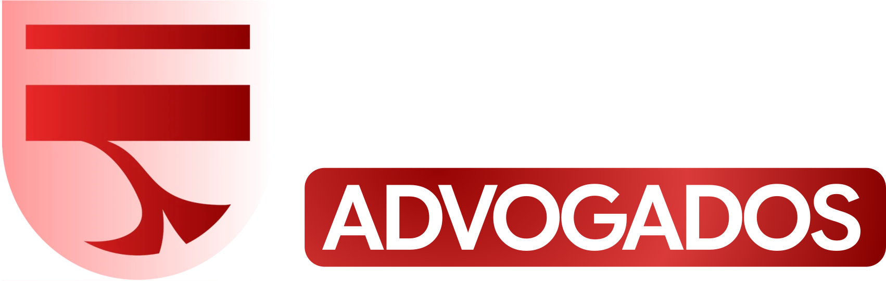
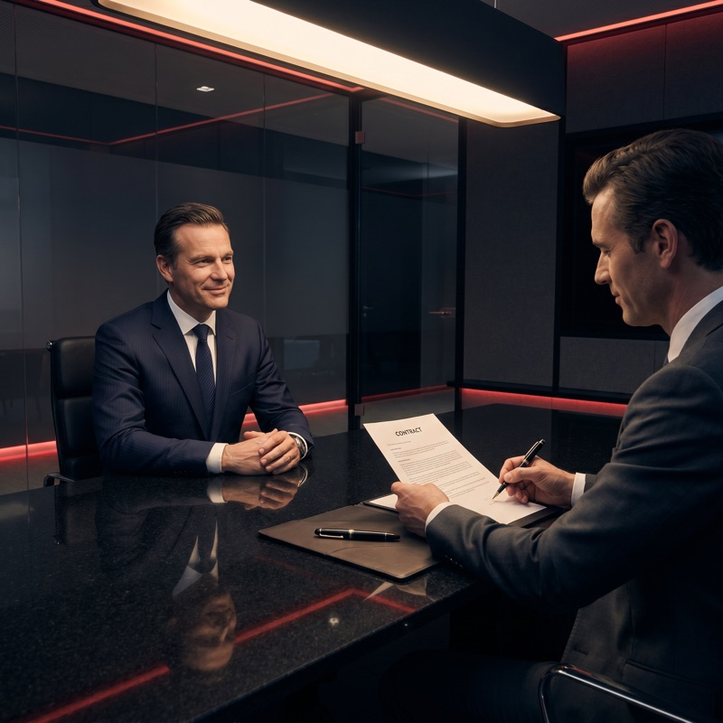
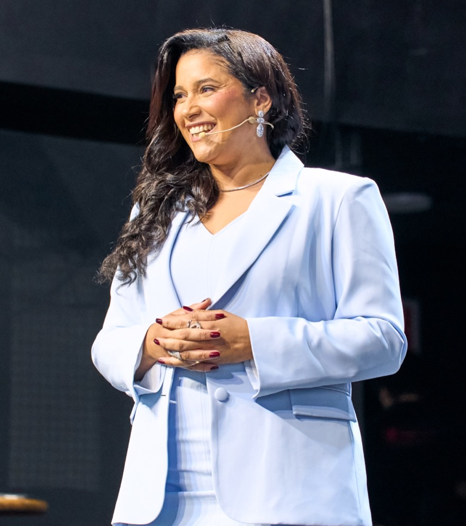

No dia 06/06, das 09h às 19h, participe de uma imersão on-line intensiva
para aprender como dominar, na prática, as 3 ações que podem mudar a
forma como sua advocacia gera oportunidades, contratos e honorários.
Ainda em 2026, sua advocacia pode sair do improviso e entrar em uma
rota de crescimento com método, autoridade e previsibilidade.
Advogar exige conhecimento técnico.
Mas construir uma
advocacia que cresce
exige mais do que isso.
Saber o que fazer para ser percebido pelo cliente certo.
Saber transformar interesse em confiança.

Saber conduzir oportunidades até a contratação.
Mais posts sem estratégia.
Mais reuniões sem direção.
Mais conversas que não fecham.
Mais espera por indicações.
Em 1 dia, você vai entender o que precisa ser
ajustado
para sua advocacia sair do improviso
e entrar em uma
rota de crescimento mais
estratégica ainda em 2026.
Como identificar os pontos que hoje travam o faturamento da sua advocacia.
Como tornar sua comunicação mais estratégica, para gerar mais autoridade e desejo de contratação.
Como evitar que o cliente enxergue seu serviço como mais uma opção entre tantas.
Como conduzir oportunidades com mais clareza, sem depender de improviso em cada conversa.
Como transformar esforço em direção, para parar de fazer ações soltas e começar a seguir uma lógica de crescimento.
Como aplicar uma visão mais prática sobre atração, conversão e fechamento, sem revelar tudo antes da imersão.

Jéssica Abreu é especialista em crescimento estratégico para advogados e criadora do Método CIA.
Seu trabalho é ajudar advogados e escritórios a transformarem conhecimento técnico em posicionamento, autoridade, captação e faturamento.
Por meio de uma metodologia prática, Jéssica ensina como sair da dependência de indicação, da comunicação genérica e do atendimento improvisado para construir uma advocacia com mais clareza, método e previsibilidade.
Nesta imersão, ela vai conduzir um dia inteiro de treinamento para mostrar as 3 ações que podem mudar a forma como sua advocacia cresce ainda em 2026.
Mas isso não acontece por acaso. Acontece quando
você domina as ações certas.
No dia 06/06, das 09h às 19h, eu vou te mostrar o caminho
prático para alavancar seu faturamento na advocacia com
mais método, autoridade e previsibilidade.
Enviamos os detalhes da imersão para o seu e-mail e WhatsApp. Nos vemos no dia 06/06.